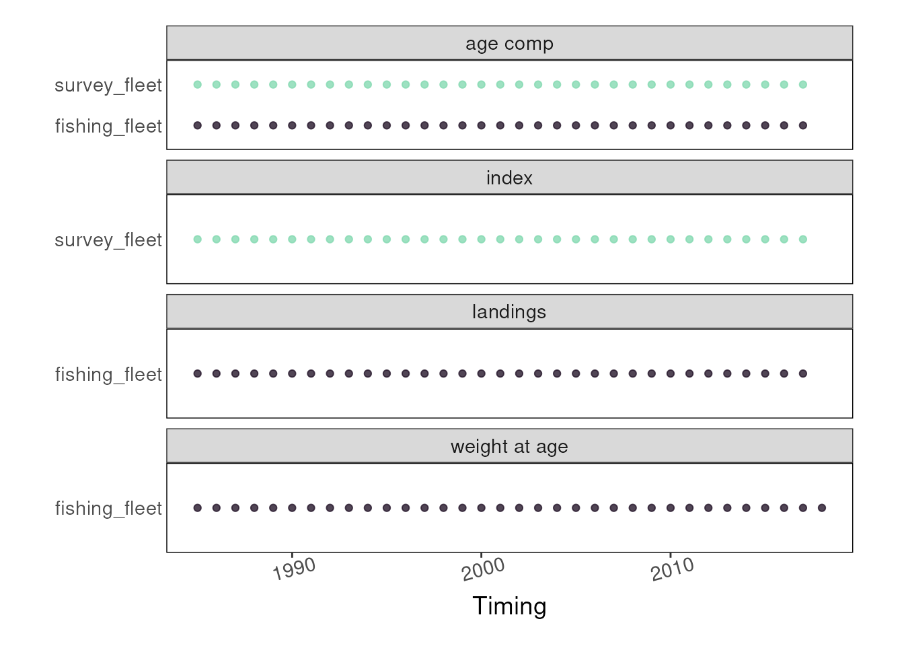
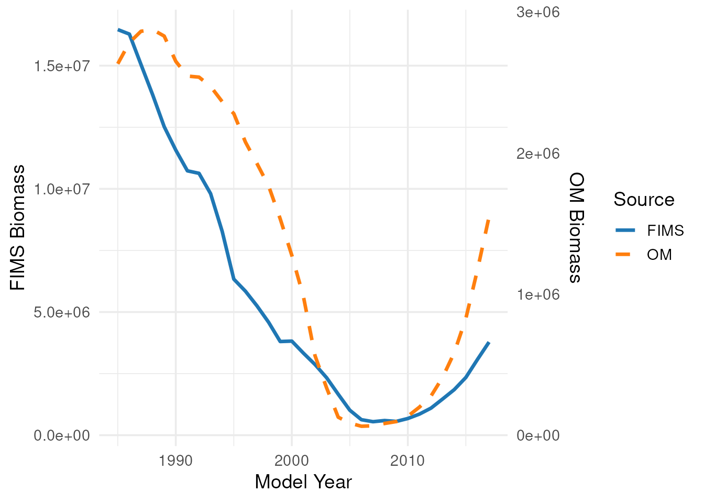
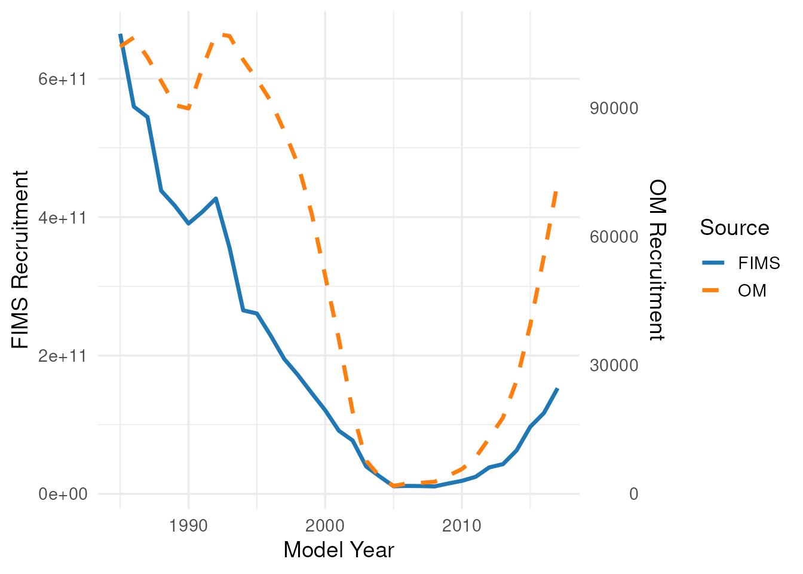
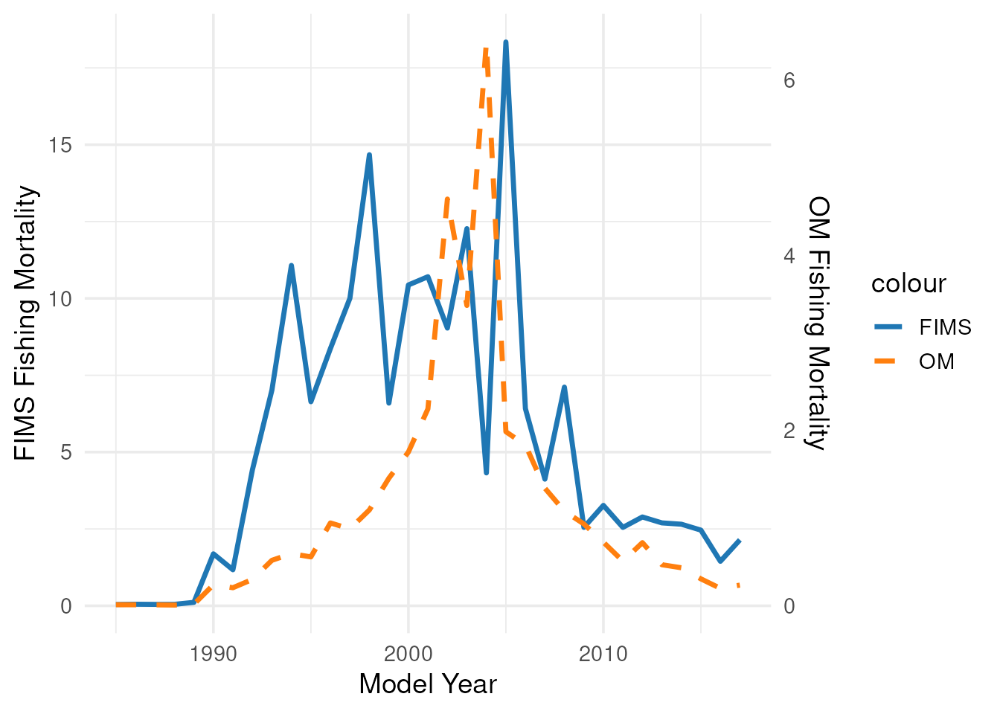

From Ecopath with Ecosim to Fisheries Integrated Modeling System
An Ecosystem-to-Stock-Assessment Simulation Workflow using {ecosystemom}
ewe-ecosim-base-simulation.RmdIntroduction
Ecosystem-based fishery management (EBFM) is crucial for addressing the complex, dynamic challenges posed by non-stationary climate, ecological, and economic conditions. However, translating outputs from ecosystem models into products suitable for fishery stock assessment models remains a key challenge.
This vignette demonstrates an end-to-end simulation workflow implemented in the {ecosystemom} package for linking ecosystem model outputs with fisheries estimation models. The workflow includes functions to:
-
load_model()— import and standardize output from ecosystem operating models (OM). For example, this function can be used to read and standardize Ecopath with Ecosim (EwE) Ecosim outputs for downstream analyses within {ecosystemom}. -
calc_truth()— extract “true” population quantities from the OM, including annual or monthly biomass trajectories and biomass-at-age. -
sample_*()— generate sampled observations from OM outputs for use in estimation models such as the Fisheries Integrated Modeling System (FIMS). -
create_dsem_inputs()— prepare environmental covariates or diet composition data from the OM to support candidate model specifications for dynamic structural equation models (DSEMs) and related ecosystem-informed analyses.
Load EwE Model Outputs
We begin by identifying and parsing raw comma-separated output matrices exported from a baseline EwE model run of the Northwest Atlantic. The critical target files extracted by {ecosystemom} include:
- basic_estimates.csv
- biomass_monthly.csv
- catch_monthly.csv
- diet_composition.csv
- mortality_monthly.csv
- weight_monthly.csv
Get functional groups from the EwE model
# Locate package internal files
ewe_nwatlantic_path <- system.file(
"extdata", "ewe_ecosim_base_nwatlantic",
package = "ecosystemom"
)
model_years <- 1985:2017
# Load functional groups
functional_groups <- get_functional_groups(
file_path = fs::path(ewe_nwatlantic_path, "basic_estimates.csv")
)
functional_groups |>
scroll_table()| functional_group | species | group | functional_group_snake_case |
|---|---|---|---|
| striped bass 0 | striped bass | 0 | striped_bass_0 |
| striped bass 2-5 | striped bass | 2-5 | striped_bass_2_5 |
| striped bass 6+ | striped bass | 6+ | striped_bass_6_plus |
| menhaden 0 | menhaden | 0 | menhaden_0 |
| menhaden 1 | menhaden | 1 | menhaden_1 |
| menhaden 2 | menhaden | 2 | menhaden_2 |
| menhaden 3 | menhaden | 3 | menhaden_3 |
| menhaden 4 | menhaden | 4 | menhaden_4 |
| menhaden 5 | menhaden | 5 | menhaden_5 |
| menhaden 6+ | menhaden | 6+ | menhaden_6_plus |
| spiny dogfish | spiny dogfish | NA | spiny_dogfish |
| bluefish juv | bluefish | juv | bluefish_juv |
| bluefish adult | bluefish | adult | bluefish_adult |
| weakfish juv | weakfish | juv | weakfish_juv |
| weakfish adult | weakfish | adult | weakfish_adult |
| Atlantic herring 0-1 | Atlantic herring | 0-1 | atlantic_herring_0_1 |
| Atlantic herring 2+ | Atlantic herring | 2+ | atlantic_herring_2_plus |
| anchovies | anchovies | NA | anchovies |
| benthos | benthos | NA | benthos |
| zooplankton | zooplankton | NA | zooplankton |
| phytoplankton | phytoplankton | NA | phytoplankton |
| Detritus | Detritus | NA | detritus |
Load EwE Ecosim model
# Load and standardize EwE outputs
data_om <- load_model(
directory = ewe_nwatlantic_path,
functional_groups = functional_groups,
type = "ewe_ecosim",
unit = c(
"biomass" = "1e^6 mt",
"catch" = "1e^6 mt",
"landings" = "1e^6 mt",
"total_mortality" = "year^-1",
"weight" = "kg"
)
)
data_om |>
head(n = 10) |>
dplyr::mutate(file_name = "./biomass_monthly.csv") |>
scroll_table()| file_name | type | year | month | functional_group | value | species | group | functional_group_snake_case | unit |
|---|---|---|---|---|---|---|---|---|---|
| ./biomass_monthly.csv | biomass | 1985 | 1 | striped bass 0 | 0.0084961 | striped bass | 0 | striped_bass_0 | 1e^6 mt |
| ./biomass_monthly.csv | biomass | 1985 | 1 | striped bass 2-5 | 0.0362939 | striped bass | 2-5 | striped_bass_2_5 | 1e^6 mt |
| ./biomass_monthly.csv | biomass | 1985 | 1 | striped bass 6+ | 0.0186583 | striped bass | 6+ | striped_bass_6_plus | 1e^6 mt |
| ./biomass_monthly.csv | biomass | 1985 | 1 | menhaden 0 | 0.2910449 | menhaden | 0 | menhaden_0 | 1e^6 mt |
| ./biomass_monthly.csv | biomass | 1985 | 1 | menhaden 1 | 0.9729747 | menhaden | 1 | menhaden_1 | 1e^6 mt |
| ./biomass_monthly.csv | biomass | 1985 | 1 | menhaden 2 | 0.7663768 | menhaden | 2 | menhaden_2 | 1e^6 mt |
| ./biomass_monthly.csv | biomass | 1985 | 1 | menhaden 3 | 0.3195014 | menhaden | 3 | menhaden_3 | 1e^6 mt |
| ./biomass_monthly.csv | biomass | 1985 | 1 | menhaden 4 | 0.1119810 | menhaden | 4 | menhaden_4 | 1e^6 mt |
| ./biomass_monthly.csv | biomass | 1985 | 1 | menhaden 5 | 0.0409002 | menhaden | 5 | menhaden_5 | 1e^6 mt |
| ./biomass_monthly.csv | biomass | 1985 | 1 | menhaden 6+ | 0.0314173 | menhaden | 6+ | menhaden_6_plus | 1e^6 mt |
data_om |>
dplyr::distinct(type, species) |>
scroll_table()| type | species |
|---|---|
| biomass | striped bass |
| biomass | menhaden |
| biomass | spiny dogfish |
| biomass | bluefish |
| biomass | weakfish |
| biomass | Atlantic herring |
| biomass | anchovies |
| biomass | benthos |
| biomass | zooplankton |
| biomass | phytoplankton |
| biomass | Detritus |
| catch | striped bass |
| catch | menhaden |
| catch | spiny dogfish |
| catch | bluefish |
| catch | weakfish |
| catch | Atlantic herring |
| catch | anchovies |
| catch | benthos |
| catch | zooplankton |
| catch | phytoplankton |
| catch | Detritus |
| total_mortality | striped bass |
| total_mortality | menhaden |
| total_mortality | spiny dogfish |
| total_mortality | bluefish |
| total_mortality | weakfish |
| total_mortality | Atlantic herring |
| total_mortality | anchovies |
| total_mortality | benthos |
| total_mortality | zooplankton |
| total_mortality | phytoplankton |
| total_mortality | Detritus |
| weight | striped bass |
| weight | menhaden |
| weight | spiny dogfish |
| weight | bluefish |
| weight | weakfish |
| weight | Atlantic herring |
| weight | anchovies |
| weight | benthos |
| weight | zooplankton |
| weight | phytoplankton |
| weight | Detritus |
| fishing_mortality | striped bass |
| fishing_mortality | menhaden |
| fishing_mortality | spiny dogfish |
| fishing_mortality | bluefish |
| fishing_mortality | weakfish |
| fishing_mortality | Atlantic herring |
| fishing_mortality | anchovies |
| fishing_mortality | benthos |
| fishing_mortality | zooplankton |
| fishing_mortality | phytoplankton |
| fishing_mortality | Detritus |
| natural_mortality | striped bass |
| natural_mortality | menhaden |
| natural_mortality | spiny dogfish |
| natural_mortality | bluefish |
| natural_mortality | weakfish |
| natural_mortality | Atlantic herring |
| natural_mortality | anchovies |
| natural_mortality | benthos |
| natural_mortality | zooplankton |
| natural_mortality | phytoplankton |
| natural_mortality | Detritus |
Extract “Truth” from the OM
Using calc_truth(), we synthesize raw EwE time series
into a structured tibble. This “truth” represents the true state of the
ecosystem against which our estimation model will be tested. For this
demonstration, our focal species is “menhaden”. To isolate a target
stock assessment from the broader ecosystem web, we subset a single
focal species from the OM. In this vignette, we track Atlantic Menhaden
(Brevoortia tyrannus), a key forage fish species. We extract “true”
indices and age compositions using calc_truth().
# Extract "true" values for menhaden
truth_om <- calc_truth(
data = data_om,
species_name = "menhaden"
)
truth_om |>
dplyr::select(-truth_om) |>
scroll_table()| species_name | truth_label | truth_type | truth_time_step |
|---|---|---|---|
| menhaden | biomass | index | monthly |
| menhaden | biomass | index | yearly |
| menhaden | biomass | agecomp | monthly |
| menhaden | biomass | agecomp | yearly |
| menhaden | catch | index | monthly |
| menhaden | catch | index | yearly |
| menhaden | catch | agecomp | monthly |
| menhaden | catch | agecomp | yearly |
| menhaden | fishing_mortality | index | monthly |
| menhaden | fishing_mortality | index | yearly |
| menhaden | fishing_mortality | agecomp | monthly |
| menhaden | fishing_mortality | agecomp | yearly |
| menhaden | natural_mortality | agecomp | monthly |
| menhaden | natural_mortality | agecomp | yearly |
| menhaden | numbers | index | monthly |
| menhaden | numbers | index | yearly |
| menhaden | numbers | agecomp | monthly |
| menhaden | numbers | agecomp | yearly |
| menhaden | total_mortality | agecomp | monthly |
| menhaden | total_mortality | agecomp | yearly |
| menhaden | weight | agecomp | monthly |
| menhaden | weight | agecomp | yearly |
# Extract and unnest annual catch
catch_index_om <- truth_om |>
dplyr::filter(
truth_label == "catch",
truth_type == "index",
truth_time_step == "yearly"
) |>
tidyr::unnest(cols = c(truth_om)) |>
dplyr::mutate(
truth_value = truth_value * 1000000,
truth_unit = "mt"
)
catch_index_om |>
scroll_table()| species_name | truth_label | truth_type | truth_time_step | truth_year | truth_unit | truth_value |
|---|---|---|---|---|---|---|
| menhaden | catch | index | yearly | 1985 | mt | 16436.46 |
| menhaden | catch | index | yearly | 1986 | mt | 16565.34 |
| menhaden | catch | index | yearly | 1987 | mt | 15939.05 |
| menhaden | catch | index | yearly | 1988 | mt | 12596.12 |
| menhaden | catch | index | yearly | 1989 | mt | 25993.96 |
| menhaden | catch | index | yearly | 1990 | mt | 321014.86 |
| menhaden | catch | index | yearly | 1991 | mt | 258893.40 |
| menhaden | catch | index | yearly | 1992 | mt | 365211.37 |
| menhaden | catch | index | yearly | 1993 | mt | 600358.51 |
| menhaden | catch | index | yearly | 1994 | mt | 659307.57 |
| menhaden | catch | index | yearly | 1995 | mt | 604887.34 |
| menhaden | catch | index | yearly | 1996 | mt | 907276.10 |
| menhaden | catch | index | yearly | 1997 | mt | 771183.60 |
| menhaden | catch | index | yearly | 1998 | mt | 878034.15 |
| menhaden | catch | index | yearly | 1999 | mt | 981962.22 |
| menhaden | catch | index | yearly | 2000 | mt | 961678.94 |
| menhaden | catch | index | yearly | 2001 | mt | 926563.53 |
| menhaden | catch | index | yearly | 2002 | mt | 933937.94 |
| menhaden | catch | index | yearly | 2003 | mt | 435965.57 |
| menhaden | catch | index | yearly | 2004 | mt | 292324.12 |
| menhaden | catch | index | yearly | 2005 | mt | 66979.80 |
| menhaden | catch | index | yearly | 2006 | mt | 58767.23 |
| menhaden | catch | index | yearly | 2007 | mt | 36368.17 |
| menhaden | catch | index | yearly | 2008 | mt | 41439.10 |
| menhaden | catch | index | yearly | 2009 | mt | 42480.31 |
| menhaden | catch | index | yearly | 2010 | mt | 42963.63 |
| menhaden | catch | index | yearly | 2011 | mt | 47277.22 |
| menhaden | catch | index | yearly | 2012 | mt | 91043.37 |
| menhaden | catch | index | yearly | 2013 | mt | 87008.47 |
| menhaden | catch | index | yearly | 2014 | mt | 120764.99 |
| menhaden | catch | index | yearly | 2015 | mt | 119770.21 |
| menhaden | catch | index | yearly | 2016 | mt | 110616.90 |
| menhaden | catch | index | yearly | 2017 | mt | 175165.13 |
# Extract and unnest annual weight-at-age
weight_agecomp_om <- truth_om |>
dplyr::filter(
truth_label == "weight",
truth_type == "agecomp",
truth_time_step == "yearly"
) |>
tidyr::unnest(cols = c(truth_om)) |>
dplyr::mutate(
truth_value = truth_value / 1000,
truth_unit = "mt"
)
# Extract and unnest annual catch-at-age in numbers
catch_agecomp_om <- truth_om |>
dplyr::filter(
truth_label == "catch",
truth_type == "agecomp",
truth_time_step == "yearly"
) |>
tidyr::unnest(cols = c(truth_om)) |>
dplyr::mutate(
truth_value = truth_value * 1000000,
truth_unit = "mt"
) |>
dplyr::left_join(
weight_agecomp_om |>
dplyr::select(-species_name, -truth_label, -truth_type, -truth_time_step, -truth_unit),
by = c("truth_year", "truth_group"),
suffix = c("_catch", "_weight")
) |>
dplyr::mutate(
truth_value = ceiling(truth_value_catch / truth_value_weight),
truth_unit = "numbers"
) |>
dplyr::select(-truth_value_catch, -truth_value_weight)
# Extract and unnest annual biomass
biomass_index_om <- truth_om |>
dplyr::filter(
truth_label == "biomass",
truth_type == "index",
truth_time_step == "yearly"
) |>
tidyr::unnest(cols = c(truth_om)) |>
dplyr::mutate(
truth_value = truth_value * 1000000,
truth_unit = "mt"
)
# Extract and unnest annual number-at-age
number_agecomp_om <- truth_om |>
dplyr::filter(
truth_label == "numbers",
truth_type == "agecomp",
truth_time_step == "yearly"
) |>
tidyr::unnest(cols = c(truth_om)) |>
dplyr::mutate(
truth_value = ceiling(truth_value * 1000000 / 1000),
truth_unit = "numbers"
)
# Extract and unnest annual natural mortality by age
natural_mortality_agecomp_om <- truth_om |>
dplyr::filter(
truth_label == "natural_mortality",
truth_type == "agecomp",
truth_time_step == "yearly"
) |>
tidyr::unnest(cols = c(truth_om))
# Extract and unnest annual fishing mortality by age
fishing_mortality_agecomp_om <- truth_om |>
dplyr::filter(
truth_label == "fishing_mortality",
truth_type == "agecomp",
truth_time_step == "yearly"
) |>
tidyr::unnest(cols = c(truth_om))
# Extract and unnest annual fishing mortality: apical F
fishing_mortality_index_om <- truth_om |>
dplyr::filter(
truth_label == "fishing_mortality",
truth_type == "index",
truth_time_step == "yearly"
) |>
tidyr::unnest(cols = c(truth_om))Generate Sampled Data
To mimic observed fisheries data, sampled observations are generated from the OM “truth” while incorporating observation error.
Fishery-Dependent Data
Observed catch data are simulated by applying lognormal observation error to the “true” catch values with a standard deviation of 0.05. Age composition data are generated using a multinomial sampling distribution with an effective sample size of N=200.
catch_index_sd <- 0.05
catch_index_sampled <- catch_index_om |>
dplyr::mutate(
sampled_value = sample_lognormal(
x = truth_value,
sd = catch_index_sd
)
)
catch_index_sampled |>
scroll_table()| species_name | truth_label | truth_type | truth_time_step | truth_year | truth_unit | truth_value | sampled_value |
|---|---|---|---|---|---|---|---|
| menhaden | catch | index | yearly | 1985 | mt | 16436.46 | 15306.08 |
| menhaden | catch | index | yearly | 1986 | mt | 16565.34 | 16757.21 |
| menhaden | catch | index | yearly | 1987 | mt | 15939.05 | 14092.72 |
| menhaden | catch | index | yearly | 1988 | mt | 12596.12 | 12576.88 |
| menhaden | catch | index | yearly | 1989 | mt | 25993.96 | 26780.97 |
| menhaden | catch | index | yearly | 1990 | mt | 321014.86 | 339562.49 |
| menhaden | catch | index | yearly | 1991 | mt | 258893.40 | 236057.52 |
| menhaden | catch | index | yearly | 1992 | mt | 365211.37 | 360272.26 |
| menhaden | catch | index | yearly | 1993 | mt | 600358.51 | 592331.83 |
| menhaden | catch | index | yearly | 1994 | mt | 659307.57 | 649241.57 |
| menhaden | catch | index | yearly | 1995 | mt | 604887.34 | 587635.74 |
| menhaden | catch | index | yearly | 1996 | mt | 907276.10 | 935092.93 |
| menhaden | catch | index | yearly | 1997 | mt | 771183.60 | 853997.03 |
| menhaden | catch | index | yearly | 1998 | mt | 878034.15 | 808261.80 |
| menhaden | catch | index | yearly | 1999 | mt | 981962.22 | 1006187.97 |
| menhaden | catch | index | yearly | 2000 | mt | 961678.94 | 875049.17 |
| menhaden | catch | index | yearly | 2001 | mt | 926563.53 | 901564.86 |
| menhaden | catch | index | yearly | 2002 | mt | 933937.94 | 930321.19 |
| menhaden | catch | index | yearly | 2003 | mt | 435965.57 | 447404.50 |
| menhaden | catch | index | yearly | 2004 | mt | 292324.12 | 278915.66 |
| menhaden | catch | index | yearly | 2005 | mt | 66979.80 | 68480.48 |
| menhaden | catch | index | yearly | 2006 | mt | 58767.23 | 59768.69 |
| menhaden | catch | index | yearly | 2007 | mt | 36368.17 | 34029.13 |
| menhaden | catch | index | yearly | 2008 | mt | 41439.10 | 42942.57 |
| menhaden | catch | index | yearly | 2009 | mt | 42480.31 | 46628.69 |
| menhaden | catch | index | yearly | 2010 | mt | 42963.63 | 42701.40 |
| menhaden | catch | index | yearly | 2011 | mt | 47277.22 | 45059.60 |
| menhaden | catch | index | yearly | 2012 | mt | 91043.37 | 90857.15 |
| menhaden | catch | index | yearly | 2013 | mt | 87008.47 | 83380.63 |
| menhaden | catch | index | yearly | 2014 | mt | 120764.99 | 111829.62 |
| menhaden | catch | index | yearly | 2015 | mt | 119770.21 | 125347.91 |
| menhaden | catch | index | yearly | 2016 | mt | 110616.90 | 111457.94 |
| menhaden | catch | index | yearly | 2017 | mt | 175165.13 | 177090.94 |
catch_agecomp_sample_size <- 200
catch_agecomp_sampled <- catch_agecomp_om |>
dplyr::group_by(truth_year) |>
dplyr::mutate(
sampled_value = sample_multinomial(
x = truth_value,
sample_size = catch_agecomp_sample_size
)
) |>
dplyr::ungroup()Fishery-Independent Survey Data
Fishery-independent survey observations are simulated by applying a double-logistic selectivity and catchability coefficient (q) to the “true” number-at-age matrix from the OM. Observed survey index is simulated by applying lognormal observation error to the “true” values with a standard deviation of 0.1. Age composition data are generated using a multinomial sampling distribution with an effective sample size of N=200.
ages <- 0:6
names(ages) <- functional_groups |>
dplyr::filter(species == "menhaden") |>
dplyr::pull(group)
# Define explicit survey catchability
catchability_survey <- 0.05
selectivity_inflection_point_asc <- 1.2
selectivity_slope_asc <- 2.1
selectivity_inflection_point_desc <- 3.8
selectivity_slope_desc <- 1.2
selectivity_ascending <- 1 / (1 + exp(-selectivity_slope_asc * (ages - selectivity_inflection_point_asc)))
selectivity_descending <- 1 / (1 + exp(-selectivity_slope_desc * (ages - selectivity_inflection_point_desc)))
selectivity_survey <- selectivity_ascending * (1 - selectivity_descending)
names(selectivity_survey) <- functional_groups |>
dplyr::filter(species == "menhaden") |>
dplyr::pull(group)
# Survey index
survey_data <- number_agecomp_om |>
dplyr::left_join(
weight_agecomp_om |>
dplyr::select(-species_name, -truth_label, -truth_type, -truth_time_step, -truth_unit),
by = c("truth_year", "truth_group"),
suffix = c("_number", "_weight")
) |>
dplyr::mutate(
selectivity = selectivity_survey[truth_group],
truth_value_selected_number = ceiling(truth_value_number * selectivity * catchability_survey),
truth_value_selected_biomass = truth_value_selected_number * truth_value_weight
)
# Generate observed survey biomass indices with lognormal error (SD = 0.1)
survey_index_sd <- 0.1
survey_index_sampled <- survey_data |>
dplyr::select(
-truth_value_number, -truth_value_weight, -selectivity, -truth_value_selected_number
) |>
dplyr::mutate(
truth_label = "biomass",
truth_unit = "mt"
) |>
# Aggregate all ages/groups into one annual value
dplyr::group_by(truth_year) |>
dplyr::summarise(
truth_value = sum(truth_value_selected_biomass),
.groups = "drop"
) |>
dplyr::mutate(
species_name = "menhaden",
truth_label = "biomass",
truth_type = "index",
truth_time_step = "yearly",
truth_unit = "mt"
) |>
dplyr::mutate(
sampled_value = sample_lognormal(
x = truth_value,
sd = survey_index_sd
)
)
# Survey agecomp
survey_agecomp_sample_size <- 200
survey_agecomp_sampled <- survey_data |>
dplyr::group_by(truth_year) |>
dplyr::mutate(
sampled_value = sample_multinomial(
x = truth_value_selected_number,
sample_size = survey_agecomp_sample_size
)
) |>
dplyr::ungroup() |>
dplyr::select(
-truth_value_number, -truth_value_weight, -selectivity,
-truth_value_selected_biomass
) |>
dplyr::rename(truth_value = truth_value_selected_number)Prepare FIMS-compatible data
The sampled fishery-dependent and fishery-independent observations
are next reformatted into a FIMSFrame object for use with
the FIMS. This includes annual landings, survey biomass indices, age
composition observations, and weight-at-age information.
The resulting FIMSFrame object provides the standardized
data structure required for model configuration and estimation in
FIMS.
Click to expand/collapse code
fishing_fleet_name <- "fishing_fleet"
survey_fleet_name <- "survey_fleet"
landings_data <- data.frame(
type = "landings",
name = fishing_fleet_name,
age = NA,
timing = model_years,
value = catch_index_sampled[["sampled_value"]],
unit = "mt",
uncertainty = catch_index_sd
)
index_data <- data.frame(
type = "index",
name = survey_fleet_name,
age = NA,
timing = model_years,
value = survey_index_sampled[["sampled_value"]],
unit = "mt",
uncertainty = survey_index_sd
)
age_data <- rbind(
data.frame(
type = "age_comp",
name = fishing_fleet_name,
age = unname(ages[catch_agecomp_sampled[["truth_group"]]]),
timing = catch_agecomp_sampled[["truth_year"]],
value = catch_agecomp_sampled[["sampled_value"]],
unit = "number",
uncertainty = catch_agecomp_sample_size
),
data.frame(
type = "age_comp",
name = survey_fleet_name,
age = unname(ages[survey_agecomp_sampled[["truth_group"]]]),
timing = survey_agecomp_sampled[["truth_year"]],
value = survey_agecomp_sampled[["sampled_value"]],
unit = "number",
uncertainty = survey_agecomp_sample_size
)
)
weight_at_age <- data.frame(
type = "weight_at_age",
name = fishing_fleet_name,
age = unname(ages[weight_agecomp_om[["truth_group"]]]),
timing = weight_agecomp_om[["truth_year"]],
value = weight_agecomp_om[["truth_value"]],
unit = "mt",
uncertainty = NA
)
weight_year_plus <- weight_at_age |>
dplyr::filter(timing == max(model_years)) |>
dplyr::mutate(timing = timing + 1)
weight_at_age_data <- dplyr::bind_rows(
weight_at_age,
weight_year_plus
)
data_fims <- rbind(landings_data, index_data, age_data, weight_at_age_data) |>
dplyr::mutate(
length = NA,
.after = "age"
) |>
FIMS::FIMSFrame()
methods::show(data_fims)
#> # A tibble: 6 × 8
#> type name age length timing value unit uncertainty
#> <chr> <chr> <int> <dbl> <dbl> <dbl> <chr> <dbl>
#> 1 age_comp fishing_fleet 0 NA 1985 41 number 200
#> 2 age_comp fishing_fleet 1 NA 1985 61 number 200
#> 3 age_comp fishing_fleet 2 NA 1985 84 number 200
#> 4 age_comp fishing_fleet 3 NA 1985 13 number 200
#> 5 age_comp fishing_fleet 4 NA 1985 1 number 200
#> 6 age_comp fishing_fleet 5 NA 1985 0 number 200
#> additional slots include the following:fleets:
#> [1] "fishing_fleet" "survey_fleet"
#> n_years:
#> [1] 33
#> ages:
#> [1] 0 1 2 3 4 5 6
#> n_ages:
#> [1] 7
#> lengths:
#> numeric(0)
#> n_lengths:
#> [1] 0
#> start_year:
#> [1] 1985
#> end_year:
#> [1] 2017
plot(data_fims)
Configure the FIMS estimation model
FIMS models are initialized using a set of default configurations and parameter values derived from the input data. In this section, we customize those defaults to better align the FIMS estimation model with the underlying ecosystem OM.
Key modifications include:
- Replacing the default selectivity formulation with a double-logistic selectivity function for both the fishing fleet and survey fleet.
- Initializing fishing mortality, survey catchability, recruitment, and natural mortality parameters using values derived from the OM “truth”.
- Specifying maturity-at-age using a logistic maturity curve.
- Initializing numbers-at-age in the first model year directly from the OM population state.
These steps provide informed starting values that improve consistency between the OM and the estimation model.
Click to expand/collapse code
# Generate default FIMS model configurations
default_configurations <- FIMS::create_default_configurations(
data = data_fims
)
default_configurations |>
tidyr::unnest(cols = data) |>
scroll_table()| model_family | module_name | fleet_name | module_type | distribution_type | distribution |
|---|---|---|---|---|---|
| catch_at_age | Data | fishing_fleet | AgeComp | Data | Dmultinom |
| catch_at_age | Data | fishing_fleet | Landings | Data | Dlnorm |
| catch_at_age | Selectivity | fishing_fleet | Logistic | NA | NA |
| catch_at_age | Data | survey_fleet | AgeComp | Data | Dmultinom |
| catch_at_age | Data | survey_fleet | Index | Data | Dlnorm |
| catch_at_age | Selectivity | survey_fleet | Logistic | NA | NA |
| catch_at_age | Growth | NA | EWAA | NA | NA |
| catch_at_age | Maturity | NA | Logistic | NA | NA |
| catch_at_age | Recruitment | NA | BevertonHolt | process | Dnorm |
# Replace the default selectivity model with a double-logistic function
updated_configurations <- default_configurations |>
tidyr::unnest(cols = data) |>
dplyr::rows_update(
y = tibble::tibble(
module_name = "Selectivity",
module_type = "DoubleLogistic"
),
by = c("module_name")
)
updated_configurations |>
scroll_table()| model_family | module_name | fleet_name | module_type | distribution_type | distribution |
|---|---|---|---|---|---|
| catch_at_age | Data | fishing_fleet | AgeComp | Data | Dmultinom |
| catch_at_age | Data | fishing_fleet | Landings | Data | Dlnorm |
| catch_at_age | Selectivity | fishing_fleet | DoubleLogistic | NA | NA |
| catch_at_age | Data | survey_fleet | AgeComp | Data | Dmultinom |
| catch_at_age | Data | survey_fleet | Index | Data | Dlnorm |
| catch_at_age | Selectivity | survey_fleet | DoubleLogistic | NA | NA |
| catch_at_age | Growth | NA | EWAA | NA | NA |
| catch_at_age | Maturity | NA | Logistic | NA | NA |
| catch_at_age | Recruitment | NA | BevertonHolt | process | Dnorm |
# Create default parameter values from the updated model configuration
default_parameters <- FIMS::create_default_parameters(
configurations = updated_configurations,
data = data_fims
) |>
tidyr::unnest(cols = data)
# Fishing fleet selectivity
# Option 1: Estimate selectivity from OM fishing mortality-at-age
# Mismatch note: the ecosystem model OM scales fishing selectivity (double
# logistic) to a maximum of 1, where FIMS does not.
catch_selectivity <- estimate_true_selectivity(
data = fishing_mortality_agecomp_om,
ages = ages,
functional_form = "double_logistic"
) |>
dplyr::mutate(fleet_name = fishing_fleet_name)
# Option 2: Explicit fishing fleet selectivity parameter values
catch_selectivity_inflection_point_asc <- 1.8
catch_selectivity_slope_asc <- 3.1
catch_selectivity_inflection_point_desc <- 0.01
catch_selectivity_slope_desc <- 0.88
# Estimate maturity parameters
maturity_parameters <- estimate_true_maturity(
ages = ages,
spawning_proportion = c(0, 0.1, 0.5, 0.9, 1, 1, 1),
functional_form = "logistic"
)
# Update parameter values using OM-derived truth information
updated_parameters <- default_parameters |>
# dplyr::filter(!(module_name == "Selectivity" & fleet_name == fishing_fleet_name)) |>
# dplyr::bind_rows(catch_selectivity) |>
dplyr::rows_update(
y = tibble::tibble(
fleet_name = fishing_fleet_name,
label = c(
"inflection_point_asc", "slope_asc",
"inflection_point_desc", "slope_desc"
),
value = c(
catch_selectivity_inflection_point_asc,
catch_selectivity_slope_asc,
catch_selectivity_inflection_point_desc,
catch_selectivity_slope_desc
)
),
by = c("fleet_name", "label")
) |>
dplyr::rows_update(
y = tibble::tibble(
fleet_name = fishing_fleet_name,
label = "log_Fmort",
time = fishing_mortality_index_om[["truth_year"]],
value = fishing_mortality_index_om[["truth_value"]] |>
log()
),
by = c("fleet_name", "label", "time")
) |>
dplyr::rows_update(
y = tibble::tibble(
fleet_name = survey_fleet_name,
label = c(
"inflection_point_asc", "slope_asc",
"inflection_point_desc", "slope_desc",
"log_q"
),
value = c(
selectivity_inflection_point_asc,
selectivity_slope_asc,
selectivity_inflection_point_desc,
selectivity_slope_desc,
log(catchability_survey)
)
),
by = c("fleet_name", "label")
) |>
dplyr::rows_update(
y = tibble::tibble(
label = "log_rzero",
module_type = "BevertonHolt",
value = number_agecomp_om |>
dplyr::filter(truth_group == "0", truth_year == model_years[1]) |>
dplyr::pull(truth_value) |>
log()
),
by = c("label", "module_type")
) |>
dplyr::rows_update(
y = tibble::tibble(
label = "logit_steep",
module_type = "BevertonHolt",
# calculate from vulnerability matrix: v / (v + 1)
# v = 411.23 + 1.02 + 191.58 + 2 + 1016.36 + 12.18 + 2 + 403.26 = 2039.63
# h = v / (v + 1) = 0.99
value = -log(1.0 - 0.99) + log(0.99 - 0.2)
),
by = c("label", "module_type")
) |>
dplyr::filter(!(module_name == "Maturity")) |>
dplyr::bind_rows(maturity_parameters) |>
dplyr::rows_update(
y = tibble::tibble(
label = "log_M",
age = unname(ages[natural_mortality_agecomp_om[["truth_group"]]]),
time = natural_mortality_agecomp_om[["truth_year"]],
value = log(natural_mortality_agecomp_om[["truth_value"]])
),
by = c("label", "age", "time")
) |>
dplyr::rows_update(
y = tibble::tibble(
label = "log_init_naa",
age = number_agecomp_om |>
dplyr::filter(truth_year == model_years[1]) |>
dplyr::pull(truth_group) |>
(\(x) unname(ages[x]))(),
value = number_agecomp_om |>
dplyr::filter(truth_year == model_years[1]) |>
dplyr::pull(truth_value) |>
log()
),
by = c("label", "age")
)
# Display updated parameter table
updated_parameters |>
scroll_table()| model_family | module_name | fleet_name | module_type | label | age | length | time | value | estimation_type | distribution_type | distribution |
|---|---|---|---|---|---|---|---|---|---|---|---|
| catch_at_age | Selectivity | fishing_fleet | DoubleLogistic | inflection_point_asc | NA | NA | NA | 1.8000000 | fixed_effects | NA | NA |
| catch_at_age | Selectivity | fishing_fleet | DoubleLogistic | slope_asc | NA | NA | NA | 3.1000000 | fixed_effects | NA | NA |
| catch_at_age | Selectivity | fishing_fleet | DoubleLogistic | inflection_point_desc | NA | NA | NA | 0.0100000 | fixed_effects | NA | NA |
| catch_at_age | Selectivity | fishing_fleet | DoubleLogistic | slope_desc | NA | NA | NA | 0.8800000 | fixed_effects | NA | NA |
| catch_at_age | Fleet | fishing_fleet | NA | log_q | NA | NA | NA | 0.0000000 | constant | NA | NA |
| catch_at_age | Fleet | fishing_fleet | NA | log_Fmort | NA | NA | 1985 | -4.3883506 | fixed_effects | NA | NA |
| catch_at_age | Fleet | fishing_fleet | NA | log_Fmort | NA | NA | 1986 | -4.4365488 | fixed_effects | NA | NA |
| catch_at_age | Fleet | fishing_fleet | NA | log_Fmort | NA | NA | 1987 | -4.5062927 | fixed_effects | NA | NA |
| catch_at_age | Fleet | fishing_fleet | NA | log_Fmort | NA | NA | 1988 | -4.7597733 | fixed_effects | NA | NA |
| catch_at_age | Fleet | fishing_fleet | NA | log_Fmort | NA | NA | 1989 | -4.0244071 | fixed_effects | NA | NA |
| catch_at_age | Fleet | fishing_fleet | NA | log_Fmort | NA | NA | 1990 | -1.4276610 | fixed_effects | NA | NA |
| catch_at_age | Fleet | fishing_fleet | NA | log_Fmort | NA | NA | 1991 | -1.5789096 | fixed_effects | NA | NA |
| catch_at_age | Fleet | fishing_fleet | NA | log_Fmort | NA | NA | 1992 | -1.2008085 | fixed_effects | NA | NA |
| catch_at_age | Fleet | fishing_fleet | NA | log_Fmort | NA | NA | 1993 | -0.6559324 | fixed_effects | NA | NA |
| catch_at_age | Fleet | fishing_fleet | NA | log_Fmort | NA | NA | 1994 | -0.5195762 | fixed_effects | NA | NA |
| catch_at_age | Fleet | fishing_fleet | NA | log_Fmort | NA | NA | 1995 | -0.5837083 | fixed_effects | NA | NA |
| catch_at_age | Fleet | fishing_fleet | NA | log_Fmort | NA | NA | 1996 | -0.0562434 | fixed_effects | NA | NA |
| catch_at_age | Fleet | fishing_fleet | NA | log_Fmort | NA | NA | 1997 | -0.1307473 | fixed_effects | NA | NA |
| catch_at_age | Fleet | fishing_fleet | NA | log_Fmort | NA | NA | 1998 | 0.0898828 | fixed_effects | NA | NA |
| catch_at_age | Fleet | fishing_fleet | NA | log_Fmort | NA | NA | 1999 | 0.3755226 | fixed_effects | NA | NA |
| catch_at_age | Fleet | fishing_fleet | NA | log_Fmort | NA | NA | 2000 | 0.5622899 | fixed_effects | NA | NA |
| catch_at_age | Fleet | fishing_fleet | NA | log_Fmort | NA | NA | 2001 | 0.8092934 | fixed_effects | NA | NA |
| catch_at_age | Fleet | fishing_fleet | NA | log_Fmort | NA | NA | 2002 | 1.5348651 | fixed_effects | NA | NA |
| catch_at_age | Fleet | fishing_fleet | NA | log_Fmort | NA | NA | 2003 | 1.2316391 | fixed_effects | NA | NA |
| catch_at_age | Fleet | fishing_fleet | NA | log_Fmort | NA | NA | 2004 | 1.8614121 | fixed_effects | NA | NA |
| catch_at_age | Fleet | fishing_fleet | NA | log_Fmort | NA | NA | 2005 | 0.6861542 | fixed_effects | NA | NA |
| catch_at_age | Fleet | fishing_fleet | NA | log_Fmort | NA | NA | 2006 | 0.6069573 | fixed_effects | NA | NA |
| catch_at_age | Fleet | fishing_fleet | NA | log_Fmort | NA | NA | 2007 | 0.2939806 | fixed_effects | NA | NA |
| catch_at_age | Fleet | fishing_fleet | NA | log_Fmort | NA | NA | 2008 | 0.0769286 | fixed_effects | NA | NA |
| catch_at_age | Fleet | fishing_fleet | NA | log_Fmort | NA | NA | 2009 | -0.0688433 | fixed_effects | NA | NA |
| catch_at_age | Fleet | fishing_fleet | NA | log_Fmort | NA | NA | 2010 | -0.3206130 | fixed_effects | NA | NA |
| catch_at_age | Fleet | fishing_fleet | NA | log_Fmort | NA | NA | 2011 | -0.6751821 | fixed_effects | NA | NA |
| catch_at_age | Fleet | fishing_fleet | NA | log_Fmort | NA | NA | 2012 | -0.3278062 | fixed_effects | NA | NA |
| catch_at_age | Fleet | fishing_fleet | NA | log_Fmort | NA | NA | 2013 | -0.7579312 | fixed_effects | NA | NA |
| catch_at_age | Fleet | fishing_fleet | NA | log_Fmort | NA | NA | 2014 | -0.8353783 | fixed_effects | NA | NA |
| catch_at_age | Fleet | fishing_fleet | NA | log_Fmort | NA | NA | 2015 | -1.1794289 | fixed_effects | NA | NA |
| catch_at_age | Fleet | fishing_fleet | NA | log_Fmort | NA | NA | 2016 | -1.6155008 | fixed_effects | NA | NA |
| catch_at_age | Fleet | fishing_fleet | NA | log_Fmort | NA | NA | 2017 | -1.4445852 | fixed_effects | NA | NA |
| catch_at_age | Data | fishing_fleet | Landings | log_sd | NA | NA | 1985 | -2.9957323 | constant | Data | Dlnorm |
| catch_at_age | Data | fishing_fleet | Landings | log_sd | NA | NA | 1986 | -2.9957323 | constant | Data | Dlnorm |
| catch_at_age | Data | fishing_fleet | Landings | log_sd | NA | NA | 1987 | -2.9957323 | constant | Data | Dlnorm |
| catch_at_age | Data | fishing_fleet | Landings | log_sd | NA | NA | 1988 | -2.9957323 | constant | Data | Dlnorm |
| catch_at_age | Data | fishing_fleet | Landings | log_sd | NA | NA | 1989 | -2.9957323 | constant | Data | Dlnorm |
| catch_at_age | Data | fishing_fleet | Landings | log_sd | NA | NA | 1990 | -2.9957323 | constant | Data | Dlnorm |
| catch_at_age | Data | fishing_fleet | Landings | log_sd | NA | NA | 1991 | -2.9957323 | constant | Data | Dlnorm |
| catch_at_age | Data | fishing_fleet | Landings | log_sd | NA | NA | 1992 | -2.9957323 | constant | Data | Dlnorm |
| catch_at_age | Data | fishing_fleet | Landings | log_sd | NA | NA | 1993 | -2.9957323 | constant | Data | Dlnorm |
| catch_at_age | Data | fishing_fleet | Landings | log_sd | NA | NA | 1994 | -2.9957323 | constant | Data | Dlnorm |
| catch_at_age | Data | fishing_fleet | Landings | log_sd | NA | NA | 1995 | -2.9957323 | constant | Data | Dlnorm |
| catch_at_age | Data | fishing_fleet | Landings | log_sd | NA | NA | 1996 | -2.9957323 | constant | Data | Dlnorm |
| catch_at_age | Data | fishing_fleet | Landings | log_sd | NA | NA | 1997 | -2.9957323 | constant | Data | Dlnorm |
| catch_at_age | Data | fishing_fleet | Landings | log_sd | NA | NA | 1998 | -2.9957323 | constant | Data | Dlnorm |
| catch_at_age | Data | fishing_fleet | Landings | log_sd | NA | NA | 1999 | -2.9957323 | constant | Data | Dlnorm |
| catch_at_age | Data | fishing_fleet | Landings | log_sd | NA | NA | 2000 | -2.9957323 | constant | Data | Dlnorm |
| catch_at_age | Data | fishing_fleet | Landings | log_sd | NA | NA | 2001 | -2.9957323 | constant | Data | Dlnorm |
| catch_at_age | Data | fishing_fleet | Landings | log_sd | NA | NA | 2002 | -2.9957323 | constant | Data | Dlnorm |
| catch_at_age | Data | fishing_fleet | Landings | log_sd | NA | NA | 2003 | -2.9957323 | constant | Data | Dlnorm |
| catch_at_age | Data | fishing_fleet | Landings | log_sd | NA | NA | 2004 | -2.9957323 | constant | Data | Dlnorm |
| catch_at_age | Data | fishing_fleet | Landings | log_sd | NA | NA | 2005 | -2.9957323 | constant | Data | Dlnorm |
| catch_at_age | Data | fishing_fleet | Landings | log_sd | NA | NA | 2006 | -2.9957323 | constant | Data | Dlnorm |
| catch_at_age | Data | fishing_fleet | Landings | log_sd | NA | NA | 2007 | -2.9957323 | constant | Data | Dlnorm |
| catch_at_age | Data | fishing_fleet | Landings | log_sd | NA | NA | 2008 | -2.9957323 | constant | Data | Dlnorm |
| catch_at_age | Data | fishing_fleet | Landings | log_sd | NA | NA | 2009 | -2.9957323 | constant | Data | Dlnorm |
| catch_at_age | Data | fishing_fleet | Landings | log_sd | NA | NA | 2010 | -2.9957323 | constant | Data | Dlnorm |
| catch_at_age | Data | fishing_fleet | Landings | log_sd | NA | NA | 2011 | -2.9957323 | constant | Data | Dlnorm |
| catch_at_age | Data | fishing_fleet | Landings | log_sd | NA | NA | 2012 | -2.9957323 | constant | Data | Dlnorm |
| catch_at_age | Data | fishing_fleet | Landings | log_sd | NA | NA | 2013 | -2.9957323 | constant | Data | Dlnorm |
| catch_at_age | Data | fishing_fleet | Landings | log_sd | NA | NA | 2014 | -2.9957323 | constant | Data | Dlnorm |
| catch_at_age | Data | fishing_fleet | Landings | log_sd | NA | NA | 2015 | -2.9957323 | constant | Data | Dlnorm |
| catch_at_age | Data | fishing_fleet | Landings | log_sd | NA | NA | 2016 | -2.9957323 | constant | Data | Dlnorm |
| catch_at_age | Data | fishing_fleet | Landings | log_sd | NA | NA | 2017 | -2.9957323 | constant | Data | Dlnorm |
| catch_at_age | Data | fishing_fleet | AgeComp | NA | NA | NA | NA | NA | NA | Data | Dmultinom |
| catch_at_age | Selectivity | survey_fleet | DoubleLogistic | inflection_point_asc | NA | NA | NA | 1.2000000 | fixed_effects | NA | NA |
| catch_at_age | Selectivity | survey_fleet | DoubleLogistic | slope_asc | NA | NA | NA | 2.1000000 | fixed_effects | NA | NA |
| catch_at_age | Selectivity | survey_fleet | DoubleLogistic | inflection_point_desc | NA | NA | NA | 3.8000000 | fixed_effects | NA | NA |
| catch_at_age | Selectivity | survey_fleet | DoubleLogistic | slope_desc | NA | NA | NA | 1.2000000 | fixed_effects | NA | NA |
| catch_at_age | Fleet | survey_fleet | NA | log_q | NA | NA | NA | -2.9957323 | fixed_effects | NA | NA |
| catch_at_age | Fleet | survey_fleet | NA | log_Fmort | NA | NA | 1985 | -200.0000000 | constant | NA | NA |
| catch_at_age | Fleet | survey_fleet | NA | log_Fmort | NA | NA | 1986 | -200.0000000 | constant | NA | NA |
| catch_at_age | Fleet | survey_fleet | NA | log_Fmort | NA | NA | 1987 | -200.0000000 | constant | NA | NA |
| catch_at_age | Fleet | survey_fleet | NA | log_Fmort | NA | NA | 1988 | -200.0000000 | constant | NA | NA |
| catch_at_age | Fleet | survey_fleet | NA | log_Fmort | NA | NA | 1989 | -200.0000000 | constant | NA | NA |
| catch_at_age | Fleet | survey_fleet | NA | log_Fmort | NA | NA | 1990 | -200.0000000 | constant | NA | NA |
| catch_at_age | Fleet | survey_fleet | NA | log_Fmort | NA | NA | 1991 | -200.0000000 | constant | NA | NA |
| catch_at_age | Fleet | survey_fleet | NA | log_Fmort | NA | NA | 1992 | -200.0000000 | constant | NA | NA |
| catch_at_age | Fleet | survey_fleet | NA | log_Fmort | NA | NA | 1993 | -200.0000000 | constant | NA | NA |
| catch_at_age | Fleet | survey_fleet | NA | log_Fmort | NA | NA | 1994 | -200.0000000 | constant | NA | NA |
| catch_at_age | Fleet | survey_fleet | NA | log_Fmort | NA | NA | 1995 | -200.0000000 | constant | NA | NA |
| catch_at_age | Fleet | survey_fleet | NA | log_Fmort | NA | NA | 1996 | -200.0000000 | constant | NA | NA |
| catch_at_age | Fleet | survey_fleet | NA | log_Fmort | NA | NA | 1997 | -200.0000000 | constant | NA | NA |
| catch_at_age | Fleet | survey_fleet | NA | log_Fmort | NA | NA | 1998 | -200.0000000 | constant | NA | NA |
| catch_at_age | Fleet | survey_fleet | NA | log_Fmort | NA | NA | 1999 | -200.0000000 | constant | NA | NA |
| catch_at_age | Fleet | survey_fleet | NA | log_Fmort | NA | NA | 2000 | -200.0000000 | constant | NA | NA |
| catch_at_age | Fleet | survey_fleet | NA | log_Fmort | NA | NA | 2001 | -200.0000000 | constant | NA | NA |
| catch_at_age | Fleet | survey_fleet | NA | log_Fmort | NA | NA | 2002 | -200.0000000 | constant | NA | NA |
| catch_at_age | Fleet | survey_fleet | NA | log_Fmort | NA | NA | 2003 | -200.0000000 | constant | NA | NA |
| catch_at_age | Fleet | survey_fleet | NA | log_Fmort | NA | NA | 2004 | -200.0000000 | constant | NA | NA |
| catch_at_age | Fleet | survey_fleet | NA | log_Fmort | NA | NA | 2005 | -200.0000000 | constant | NA | NA |
| catch_at_age | Fleet | survey_fleet | NA | log_Fmort | NA | NA | 2006 | -200.0000000 | constant | NA | NA |
| catch_at_age | Fleet | survey_fleet | NA | log_Fmort | NA | NA | 2007 | -200.0000000 | constant | NA | NA |
| catch_at_age | Fleet | survey_fleet | NA | log_Fmort | NA | NA | 2008 | -200.0000000 | constant | NA | NA |
| catch_at_age | Fleet | survey_fleet | NA | log_Fmort | NA | NA | 2009 | -200.0000000 | constant | NA | NA |
| catch_at_age | Fleet | survey_fleet | NA | log_Fmort | NA | NA | 2010 | -200.0000000 | constant | NA | NA |
| catch_at_age | Fleet | survey_fleet | NA | log_Fmort | NA | NA | 2011 | -200.0000000 | constant | NA | NA |
| catch_at_age | Fleet | survey_fleet | NA | log_Fmort | NA | NA | 2012 | -200.0000000 | constant | NA | NA |
| catch_at_age | Fleet | survey_fleet | NA | log_Fmort | NA | NA | 2013 | -200.0000000 | constant | NA | NA |
| catch_at_age | Fleet | survey_fleet | NA | log_Fmort | NA | NA | 2014 | -200.0000000 | constant | NA | NA |
| catch_at_age | Fleet | survey_fleet | NA | log_Fmort | NA | NA | 2015 | -200.0000000 | constant | NA | NA |
| catch_at_age | Fleet | survey_fleet | NA | log_Fmort | NA | NA | 2016 | -200.0000000 | constant | NA | NA |
| catch_at_age | Fleet | survey_fleet | NA | log_Fmort | NA | NA | 2017 | -200.0000000 | constant | NA | NA |
| catch_at_age | Data | survey_fleet | Index | log_sd | NA | NA | 1985 | -2.3025851 | constant | Data | Dlnorm |
| catch_at_age | Data | survey_fleet | Index | log_sd | NA | NA | 1986 | -2.3025851 | constant | Data | Dlnorm |
| catch_at_age | Data | survey_fleet | Index | log_sd | NA | NA | 1987 | -2.3025851 | constant | Data | Dlnorm |
| catch_at_age | Data | survey_fleet | Index | log_sd | NA | NA | 1988 | -2.3025851 | constant | Data | Dlnorm |
| catch_at_age | Data | survey_fleet | Index | log_sd | NA | NA | 1989 | -2.3025851 | constant | Data | Dlnorm |
| catch_at_age | Data | survey_fleet | Index | log_sd | NA | NA | 1990 | -2.3025851 | constant | Data | Dlnorm |
| catch_at_age | Data | survey_fleet | Index | log_sd | NA | NA | 1991 | -2.3025851 | constant | Data | Dlnorm |
| catch_at_age | Data | survey_fleet | Index | log_sd | NA | NA | 1992 | -2.3025851 | constant | Data | Dlnorm |
| catch_at_age | Data | survey_fleet | Index | log_sd | NA | NA | 1993 | -2.3025851 | constant | Data | Dlnorm |
| catch_at_age | Data | survey_fleet | Index | log_sd | NA | NA | 1994 | -2.3025851 | constant | Data | Dlnorm |
| catch_at_age | Data | survey_fleet | Index | log_sd | NA | NA | 1995 | -2.3025851 | constant | Data | Dlnorm |
| catch_at_age | Data | survey_fleet | Index | log_sd | NA | NA | 1996 | -2.3025851 | constant | Data | Dlnorm |
| catch_at_age | Data | survey_fleet | Index | log_sd | NA | NA | 1997 | -2.3025851 | constant | Data | Dlnorm |
| catch_at_age | Data | survey_fleet | Index | log_sd | NA | NA | 1998 | -2.3025851 | constant | Data | Dlnorm |
| catch_at_age | Data | survey_fleet | Index | log_sd | NA | NA | 1999 | -2.3025851 | constant | Data | Dlnorm |
| catch_at_age | Data | survey_fleet | Index | log_sd | NA | NA | 2000 | -2.3025851 | constant | Data | Dlnorm |
| catch_at_age | Data | survey_fleet | Index | log_sd | NA | NA | 2001 | -2.3025851 | constant | Data | Dlnorm |
| catch_at_age | Data | survey_fleet | Index | log_sd | NA | NA | 2002 | -2.3025851 | constant | Data | Dlnorm |
| catch_at_age | Data | survey_fleet | Index | log_sd | NA | NA | 2003 | -2.3025851 | constant | Data | Dlnorm |
| catch_at_age | Data | survey_fleet | Index | log_sd | NA | NA | 2004 | -2.3025851 | constant | Data | Dlnorm |
| catch_at_age | Data | survey_fleet | Index | log_sd | NA | NA | 2005 | -2.3025851 | constant | Data | Dlnorm |
| catch_at_age | Data | survey_fleet | Index | log_sd | NA | NA | 2006 | -2.3025851 | constant | Data | Dlnorm |
| catch_at_age | Data | survey_fleet | Index | log_sd | NA | NA | 2007 | -2.3025851 | constant | Data | Dlnorm |
| catch_at_age | Data | survey_fleet | Index | log_sd | NA | NA | 2008 | -2.3025851 | constant | Data | Dlnorm |
| catch_at_age | Data | survey_fleet | Index | log_sd | NA | NA | 2009 | -2.3025851 | constant | Data | Dlnorm |
| catch_at_age | Data | survey_fleet | Index | log_sd | NA | NA | 2010 | -2.3025851 | constant | Data | Dlnorm |
| catch_at_age | Data | survey_fleet | Index | log_sd | NA | NA | 2011 | -2.3025851 | constant | Data | Dlnorm |
| catch_at_age | Data | survey_fleet | Index | log_sd | NA | NA | 2012 | -2.3025851 | constant | Data | Dlnorm |
| catch_at_age | Data | survey_fleet | Index | log_sd | NA | NA | 2013 | -2.3025851 | constant | Data | Dlnorm |
| catch_at_age | Data | survey_fleet | Index | log_sd | NA | NA | 2014 | -2.3025851 | constant | Data | Dlnorm |
| catch_at_age | Data | survey_fleet | Index | log_sd | NA | NA | 2015 | -2.3025851 | constant | Data | Dlnorm |
| catch_at_age | Data | survey_fleet | Index | log_sd | NA | NA | 2016 | -2.3025851 | constant | Data | Dlnorm |
| catch_at_age | Data | survey_fleet | Index | log_sd | NA | NA | 2017 | -2.3025851 | constant | Data | Dlnorm |
| catch_at_age | Data | survey_fleet | AgeComp | NA | NA | NA | NA | NA | NA | Data | Dmultinom |
| catch_at_age | Recruitment | NA | BevertonHolt | log_rzero | NA | NA | NA | 11.5541826 | fixed_effects | NA | NA |
| catch_at_age | Recruitment | NA | BevertonHolt | logit_steep | NA | NA | NA | 4.3694479 | constant | NA | NA |
| catch_at_age | Recruitment | NA | BevertonHolt | log_devs | NA | NA | 1986 | 0.0000000 | random_effects | process | Dnorm |
| catch_at_age | Recruitment | NA | BevertonHolt | log_devs | NA | NA | 1987 | 0.0000000 | random_effects | process | Dnorm |
| catch_at_age | Recruitment | NA | BevertonHolt | log_devs | NA | NA | 1988 | 0.0000000 | random_effects | process | Dnorm |
| catch_at_age | Recruitment | NA | BevertonHolt | log_devs | NA | NA | 1989 | 0.0000000 | random_effects | process | Dnorm |
| catch_at_age | Recruitment | NA | BevertonHolt | log_devs | NA | NA | 1990 | 0.0000000 | random_effects | process | Dnorm |
| catch_at_age | Recruitment | NA | BevertonHolt | log_devs | NA | NA | 1991 | 0.0000000 | random_effects | process | Dnorm |
| catch_at_age | Recruitment | NA | BevertonHolt | log_devs | NA | NA | 1992 | 0.0000000 | random_effects | process | Dnorm |
| catch_at_age | Recruitment | NA | BevertonHolt | log_devs | NA | NA | 1993 | 0.0000000 | random_effects | process | Dnorm |
| catch_at_age | Recruitment | NA | BevertonHolt | log_devs | NA | NA | 1994 | 0.0000000 | random_effects | process | Dnorm |
| catch_at_age | Recruitment | NA | BevertonHolt | log_devs | NA | NA | 1995 | 0.0000000 | random_effects | process | Dnorm |
| catch_at_age | Recruitment | NA | BevertonHolt | log_devs | NA | NA | 1996 | 0.0000000 | random_effects | process | Dnorm |
| catch_at_age | Recruitment | NA | BevertonHolt | log_devs | NA | NA | 1997 | 0.0000000 | random_effects | process | Dnorm |
| catch_at_age | Recruitment | NA | BevertonHolt | log_devs | NA | NA | 1998 | 0.0000000 | random_effects | process | Dnorm |
| catch_at_age | Recruitment | NA | BevertonHolt | log_devs | NA | NA | 1999 | 0.0000000 | random_effects | process | Dnorm |
| catch_at_age | Recruitment | NA | BevertonHolt | log_devs | NA | NA | 2000 | 0.0000000 | random_effects | process | Dnorm |
| catch_at_age | Recruitment | NA | BevertonHolt | log_devs | NA | NA | 2001 | 0.0000000 | random_effects | process | Dnorm |
| catch_at_age | Recruitment | NA | BevertonHolt | log_devs | NA | NA | 2002 | 0.0000000 | random_effects | process | Dnorm |
| catch_at_age | Recruitment | NA | BevertonHolt | log_devs | NA | NA | 2003 | 0.0000000 | random_effects | process | Dnorm |
| catch_at_age | Recruitment | NA | BevertonHolt | log_devs | NA | NA | 2004 | 0.0000000 | random_effects | process | Dnorm |
| catch_at_age | Recruitment | NA | BevertonHolt | log_devs | NA | NA | 2005 | 0.0000000 | random_effects | process | Dnorm |
| catch_at_age | Recruitment | NA | BevertonHolt | log_devs | NA | NA | 2006 | 0.0000000 | random_effects | process | Dnorm |
| catch_at_age | Recruitment | NA | BevertonHolt | log_devs | NA | NA | 2007 | 0.0000000 | random_effects | process | Dnorm |
| catch_at_age | Recruitment | NA | BevertonHolt | log_devs | NA | NA | 2008 | 0.0000000 | random_effects | process | Dnorm |
| catch_at_age | Recruitment | NA | BevertonHolt | log_devs | NA | NA | 2009 | 0.0000000 | random_effects | process | Dnorm |
| catch_at_age | Recruitment | NA | BevertonHolt | log_devs | NA | NA | 2010 | 0.0000000 | random_effects | process | Dnorm |
| catch_at_age | Recruitment | NA | BevertonHolt | log_devs | NA | NA | 2011 | 0.0000000 | random_effects | process | Dnorm |
| catch_at_age | Recruitment | NA | BevertonHolt | log_devs | NA | NA | 2012 | 0.0000000 | random_effects | process | Dnorm |
| catch_at_age | Recruitment | NA | BevertonHolt | log_devs | NA | NA | 2013 | 0.0000000 | random_effects | process | Dnorm |
| catch_at_age | Recruitment | NA | BevertonHolt | log_devs | NA | NA | 2014 | 0.0000000 | random_effects | process | Dnorm |
| catch_at_age | Recruitment | NA | BevertonHolt | log_devs | NA | NA | 2015 | 0.0000000 | random_effects | process | Dnorm |
| catch_at_age | Recruitment | NA | BevertonHolt | log_devs | NA | NA | 2016 | 0.0000000 | random_effects | process | Dnorm |
| catch_at_age | Recruitment | NA | BevertonHolt | log_devs | NA | NA | 2017 | 0.0000000 | random_effects | process | Dnorm |
| catch_at_age | Recruitment | NA | BevertonHolt | log_sd | NA | NA | NA | 0.1000000 | fixed_effects | process | Dnorm |
| catch_at_age | Population | NA | NA | log_M | 0 | NA | 1985 | 0.5510554 | constant | NA | NA |
| catch_at_age | Population | NA | NA | log_M | 1 | NA | 1985 | 0.2578511 | constant | NA | NA |
| catch_at_age | Population | NA | NA | log_M | 2 | NA | 1985 | 0.2345560 | constant | NA | NA |
| catch_at_age | Population | NA | NA | log_M | 3 | NA | 1985 | 0.3162692 | constant | NA | NA |
| catch_at_age | Population | NA | NA | log_M | 4 | NA | 1985 | -0.0214885 | constant | NA | NA |
| catch_at_age | Population | NA | NA | log_M | 5 | NA | 1985 | -0.0588443 | constant | NA | NA |
| catch_at_age | Population | NA | NA | log_M | 6 | NA | 1985 | -0.3368522 | constant | NA | NA |
| catch_at_age | Population | NA | NA | log_M | 0 | NA | 1986 | 0.5498290 | constant | NA | NA |
| catch_at_age | Population | NA | NA | log_M | 1 | NA | 1986 | 0.2525224 | constant | NA | NA |
| catch_at_age | Population | NA | NA | log_M | 2 | NA | 1986 | 0.2368321 | constant | NA | NA |
| catch_at_age | Population | NA | NA | log_M | 3 | NA | 1986 | 0.3225341 | constant | NA | NA |
| catch_at_age | Population | NA | NA | log_M | 4 | NA | 1986 | -0.0169781 | constant | NA | NA |
| catch_at_age | Population | NA | NA | log_M | 5 | NA | 1986 | -0.0477069 | constant | NA | NA |
| catch_at_age | Population | NA | NA | log_M | 6 | NA | 1986 | -0.3378550 | constant | NA | NA |
| catch_at_age | Population | NA | NA | log_M | 0 | NA | 1987 | 0.5429496 | constant | NA | NA |
| catch_at_age | Population | NA | NA | log_M | 1 | NA | 1987 | 0.2532065 | constant | NA | NA |
| catch_at_age | Population | NA | NA | log_M | 2 | NA | 1987 | 0.2310666 | constant | NA | NA |
| catch_at_age | Population | NA | NA | log_M | 3 | NA | 1987 | 0.3265500 | constant | NA | NA |
| catch_at_age | Population | NA | NA | log_M | 4 | NA | 1987 | -0.0133847 | constant | NA | NA |
| catch_at_age | Population | NA | NA | log_M | 5 | NA | 1987 | -0.0459568 | constant | NA | NA |
| catch_at_age | Population | NA | NA | log_M | 6 | NA | 1987 | -0.3330032 | constant | NA | NA |
| catch_at_age | Population | NA | NA | log_M | 0 | NA | 1988 | 0.5342818 | constant | NA | NA |
| catch_at_age | Population | NA | NA | log_M | 1 | NA | 1988 | 0.2533493 | constant | NA | NA |
| catch_at_age | Population | NA | NA | log_M | 2 | NA | 1988 | 0.2334027 | constant | NA | NA |
| catch_at_age | Population | NA | NA | log_M | 3 | NA | 1988 | 0.3244762 | constant | NA | NA |
| catch_at_age | Population | NA | NA | log_M | 4 | NA | 1988 | -0.0091122 | constant | NA | NA |
| catch_at_age | Population | NA | NA | log_M | 5 | NA | 1988 | -0.0393908 | constant | NA | NA |
| catch_at_age | Population | NA | NA | log_M | 6 | NA | 1988 | -0.3246372 | constant | NA | NA |
| catch_at_age | Population | NA | NA | log_M | 0 | NA | 1989 | 0.5299623 | constant | NA | NA |
| catch_at_age | Population | NA | NA | log_M | 1 | NA | 1989 | 0.2549291 | constant | NA | NA |
| catch_at_age | Population | NA | NA | log_M | 2 | NA | 1989 | 0.2359440 | constant | NA | NA |
| catch_at_age | Population | NA | NA | log_M | 3 | NA | 1989 | 0.3294850 | constant | NA | NA |
| catch_at_age | Population | NA | NA | log_M | 4 | NA | 1989 | -0.0085674 | constant | NA | NA |
| catch_at_age | Population | NA | NA | log_M | 5 | NA | 1989 | -0.0287585 | constant | NA | NA |
| catch_at_age | Population | NA | NA | log_M | 6 | NA | 1989 | -0.3062291 | constant | NA | NA |
| catch_at_age | Population | NA | NA | log_M | 0 | NA | 1990 | 0.5248457 | constant | NA | NA |
| catch_at_age | Population | NA | NA | log_M | 1 | NA | 1990 | 0.2575867 | constant | NA | NA |
| catch_at_age | Population | NA | NA | log_M | 2 | NA | 1990 | 0.2474677 | constant | NA | NA |
| catch_at_age | Population | NA | NA | log_M | 3 | NA | 1990 | 0.3450687 | constant | NA | NA |
| catch_at_age | Population | NA | NA | log_M | 4 | NA | 1990 | 0.0062393 | constant | NA | NA |
| catch_at_age | Population | NA | NA | log_M | 5 | NA | 1990 | -0.0158175 | constant | NA | NA |
| catch_at_age | Population | NA | NA | log_M | 6 | NA | 1990 | -0.2765721 | constant | NA | NA |
| catch_at_age | Population | NA | NA | log_M | 0 | NA | 1991 | 0.5245231 | constant | NA | NA |
| catch_at_age | Population | NA | NA | log_M | 1 | NA | 1991 | 0.2536110 | constant | NA | NA |
| catch_at_age | Population | NA | NA | log_M | 2 | NA | 1991 | 0.2388876 | constant | NA | NA |
| catch_at_age | Population | NA | NA | log_M | 3 | NA | 1991 | 0.3361421 | constant | NA | NA |
| catch_at_age | Population | NA | NA | log_M | 4 | NA | 1991 | 0.0102276 | constant | NA | NA |
| catch_at_age | Population | NA | NA | log_M | 5 | NA | 1991 | 0.0010650 | constant | NA | NA |
| catch_at_age | Population | NA | NA | log_M | 6 | NA | 1991 | -0.2498855 | constant | NA | NA |
| catch_at_age | Population | NA | NA | log_M | 0 | NA | 1992 | 0.5489156 | constant | NA | NA |
| catch_at_age | Population | NA | NA | log_M | 1 | NA | 1992 | 0.2515150 | constant | NA | NA |
| catch_at_age | Population | NA | NA | log_M | 2 | NA | 1992 | 0.2415777 | constant | NA | NA |
| catch_at_age | Population | NA | NA | log_M | 3 | NA | 1992 | 0.3392345 | constant | NA | NA |
| catch_at_age | Population | NA | NA | log_M | 4 | NA | 1992 | 0.0117635 | constant | NA | NA |
| catch_at_age | Population | NA | NA | log_M | 5 | NA | 1992 | 0.0135985 | constant | NA | NA |
| catch_at_age | Population | NA | NA | log_M | 6 | NA | 1992 | -0.2218991 | constant | NA | NA |
| catch_at_age | Population | NA | NA | log_M | 0 | NA | 1993 | 0.5676137 | constant | NA | NA |
| catch_at_age | Population | NA | NA | log_M | 1 | NA | 1993 | 0.2598213 | constant | NA | NA |
| catch_at_age | Population | NA | NA | log_M | 2 | NA | 1993 | 0.2440548 | constant | NA | NA |
| catch_at_age | Population | NA | NA | log_M | 3 | NA | 1993 | 0.3493315 | constant | NA | NA |
| catch_at_age | Population | NA | NA | log_M | 4 | NA | 1993 | 0.0189946 | constant | NA | NA |
| catch_at_age | Population | NA | NA | log_M | 5 | NA | 1993 | 0.0185022 | constant | NA | NA |
| catch_at_age | Population | NA | NA | log_M | 6 | NA | 1993 | -0.1989036 | constant | NA | NA |
| catch_at_age | Population | NA | NA | log_M | 0 | NA | 1994 | 0.5733348 | constant | NA | NA |
| catch_at_age | Population | NA | NA | log_M | 1 | NA | 1994 | 0.2650077 | constant | NA | NA |
| catch_at_age | Population | NA | NA | log_M | 2 | NA | 1994 | 0.2451121 | constant | NA | NA |
| catch_at_age | Population | NA | NA | log_M | 3 | NA | 1994 | 0.3383036 | constant | NA | NA |
| catch_at_age | Population | NA | NA | log_M | 4 | NA | 1994 | 0.0203143 | constant | NA | NA |
| catch_at_age | Population | NA | NA | log_M | 5 | NA | 1994 | 0.0232880 | constant | NA | NA |
| catch_at_age | Population | NA | NA | log_M | 6 | NA | 1994 | -0.1878561 | constant | NA | NA |
| catch_at_age | Population | NA | NA | log_M | 0 | NA | 1995 | 0.5714939 | constant | NA | NA |
| catch_at_age | Population | NA | NA | log_M | 1 | NA | 1995 | 0.2671489 | constant | NA | NA |
| catch_at_age | Population | NA | NA | log_M | 2 | NA | 1995 | 0.2452425 | constant | NA | NA |
| catch_at_age | Population | NA | NA | log_M | 3 | NA | 1995 | 0.3310723 | constant | NA | NA |
| catch_at_age | Population | NA | NA | log_M | 4 | NA | 1995 | 0.0075400 | constant | NA | NA |
| catch_at_age | Population | NA | NA | log_M | 5 | NA | 1995 | 0.0219000 | constant | NA | NA |
| catch_at_age | Population | NA | NA | log_M | 6 | NA | 1995 | -0.1841973 | constant | NA | NA |
| catch_at_age | Population | NA | NA | log_M | 0 | NA | 1996 | 0.5737462 | constant | NA | NA |
| catch_at_age | Population | NA | NA | log_M | 1 | NA | 1996 | 0.2712608 | constant | NA | NA |
| catch_at_age | Population | NA | NA | log_M | 2 | NA | 1996 | 0.2720812 | constant | NA | NA |
| catch_at_age | Population | NA | NA | log_M | 3 | NA | 1996 | 0.3682440 | constant | NA | NA |
| catch_at_age | Population | NA | NA | log_M | 4 | NA | 1996 | 0.0228084 | constant | NA | NA |
| catch_at_age | Population | NA | NA | log_M | 5 | NA | 1996 | 0.0197111 | constant | NA | NA |
| catch_at_age | Population | NA | NA | log_M | 6 | NA | 1996 | -0.1800214 | constant | NA | NA |
| catch_at_age | Population | NA | NA | log_M | 0 | NA | 1997 | 0.5681622 | constant | NA | NA |
| catch_at_age | Population | NA | NA | log_M | 1 | NA | 1997 | 0.2709746 | constant | NA | NA |
| catch_at_age | Population | NA | NA | log_M | 2 | NA | 1997 | 0.2456691 | constant | NA | NA |
| catch_at_age | Population | NA | NA | log_M | 3 | NA | 1997 | 0.3458910 | constant | NA | NA |
| catch_at_age | Population | NA | NA | log_M | 4 | NA | 1997 | 0.0284636 | constant | NA | NA |
| catch_at_age | Population | NA | NA | log_M | 5 | NA | 1997 | 0.0244087 | constant | NA | NA |
| catch_at_age | Population | NA | NA | log_M | 6 | NA | 1997 | -0.1819947 | constant | NA | NA |
| catch_at_age | Population | NA | NA | log_M | 0 | NA | 1998 | 0.5619796 | constant | NA | NA |
| catch_at_age | Population | NA | NA | log_M | 1 | NA | 1998 | 0.2733790 | constant | NA | NA |
| catch_at_age | Population | NA | NA | log_M | 2 | NA | 1998 | 0.2647729 | constant | NA | NA |
| catch_at_age | Population | NA | NA | log_M | 3 | NA | 1998 | 0.3547694 | constant | NA | NA |
| catch_at_age | Population | NA | NA | log_M | 4 | NA | 1998 | 0.0273642 | constant | NA | NA |
| catch_at_age | Population | NA | NA | log_M | 5 | NA | 1998 | 0.0323325 | constant | NA | NA |
| catch_at_age | Population | NA | NA | log_M | 6 | NA | 1998 | -0.1822804 | constant | NA | NA |
| catch_at_age | Population | NA | NA | log_M | 0 | NA | 1999 | 0.5515537 | constant | NA | NA |
| catch_at_age | Population | NA | NA | log_M | 1 | NA | 1999 | 0.2780025 | constant | NA | NA |
| catch_at_age | Population | NA | NA | log_M | 2 | NA | 1999 | 0.2777461 | constant | NA | NA |
| catch_at_age | Population | NA | NA | log_M | 3 | NA | 1999 | 0.3887215 | constant | NA | NA |
| catch_at_age | Population | NA | NA | log_M | 4 | NA | 1999 | 0.0377142 | constant | NA | NA |
| catch_at_age | Population | NA | NA | log_M | 5 | NA | 1999 | 0.0187607 | constant | NA | NA |
| catch_at_age | Population | NA | NA | log_M | 6 | NA | 1999 | -0.1874319 | constant | NA | NA |
| catch_at_age | Population | NA | NA | log_M | 0 | NA | 2000 | 0.5340019 | constant | NA | NA |
| catch_at_age | Population | NA | NA | log_M | 1 | NA | 2000 | 0.2819094 | constant | NA | NA |
| catch_at_age | Population | NA | NA | log_M | 2 | NA | 2000 | 0.2818811 | constant | NA | NA |
| catch_at_age | Population | NA | NA | log_M | 3 | NA | 2000 | 0.3971050 | constant | NA | NA |
| catch_at_age | Population | NA | NA | log_M | 4 | NA | 2000 | 0.0613504 | constant | NA | NA |
| catch_at_age | Population | NA | NA | log_M | 5 | NA | 2000 | 0.0140518 | constant | NA | NA |
| catch_at_age | Population | NA | NA | log_M | 6 | NA | 2000 | -0.2027708 | constant | NA | NA |
| catch_at_age | Population | NA | NA | log_M | 0 | NA | 2001 | 0.5088359 | constant | NA | NA |
| catch_at_age | Population | NA | NA | log_M | 1 | NA | 2001 | 0.2904512 | constant | NA | NA |
| catch_at_age | Population | NA | NA | log_M | 2 | NA | 2001 | 0.3150982 | constant | NA | NA |
| catch_at_age | Population | NA | NA | log_M | 3 | NA | 2001 | 0.4372885 | constant | NA | NA |
| catch_at_age | Population | NA | NA | log_M | 4 | NA | 2001 | 0.0845208 | constant | NA | NA |
| catch_at_age | Population | NA | NA | log_M | 5 | NA | 2001 | 0.0249441 | constant | NA | NA |
| catch_at_age | Population | NA | NA | log_M | 6 | NA | 2001 | -0.2176771 | constant | NA | NA |
| catch_at_age | Population | NA | NA | log_M | 0 | NA | 2002 | 0.5031093 | constant | NA | NA |
| catch_at_age | Population | NA | NA | log_M | 1 | NA | 2002 | 0.3388435 | constant | NA | NA |
| catch_at_age | Population | NA | NA | log_M | 2 | NA | 2002 | 0.6235324 | constant | NA | NA |
| catch_at_age | Population | NA | NA | log_M | 3 | NA | 2002 | 0.8869642 | constant | NA | NA |
| catch_at_age | Population | NA | NA | log_M | 4 | NA | 2002 | 0.3265030 | constant | NA | NA |
| catch_at_age | Population | NA | NA | log_M | 5 | NA | 2002 | 0.0966963 | constant | NA | NA |
| catch_at_age | Population | NA | NA | log_M | 6 | NA | 2002 | -0.2268668 | constant | NA | NA |
| catch_at_age | Population | NA | NA | log_M | 0 | NA | 2003 | 0.4731706 | constant | NA | NA |
| catch_at_age | Population | NA | NA | log_M | 1 | NA | 2003 | 0.3343495 | constant | NA | NA |
| catch_at_age | Population | NA | NA | log_M | 2 | NA | 2003 | 0.2232572 | constant | NA | NA |
| catch_at_age | Population | NA | NA | log_M | 3 | NA | 2003 | 0.3743130 | constant | NA | NA |
| catch_at_age | Population | NA | NA | log_M | 4 | NA | 2003 | 0.2736178 | constant | NA | NA |
| catch_at_age | Population | NA | NA | log_M | 5 | NA | 2003 | 0.1090028 | constant | NA | NA |
| catch_at_age | Population | NA | NA | log_M | 6 | NA | 2003 | -0.2664116 | constant | NA | NA |
| catch_at_age | Population | NA | NA | log_M | 0 | NA | 2004 | 0.4398723 | constant | NA | NA |
| catch_at_age | Population | NA | NA | log_M | 1 | NA | 2004 | 0.4214778 | constant | NA | NA |
| catch_at_age | Population | NA | NA | log_M | 2 | NA | 2004 | 0.9795473 | constant | NA | NA |
| catch_at_age | Population | NA | NA | log_M | 3 | NA | 2004 | 1.0558503 | constant | NA | NA |
| catch_at_age | Population | NA | NA | log_M | 4 | NA | 2004 | 0.4349309 | constant | NA | NA |
| catch_at_age | Population | NA | NA | log_M | 5 | NA | 2004 | 0.2781599 | constant | NA | NA |
| catch_at_age | Population | NA | NA | log_M | 6 | NA | 2004 | -0.2591358 | constant | NA | NA |
| catch_at_age | Population | NA | NA | log_M | 0 | NA | 2005 | 0.4287877 | constant | NA | NA |
| catch_at_age | Population | NA | NA | log_M | 1 | NA | 2005 | 0.2797446 | constant | NA | NA |
| catch_at_age | Population | NA | NA | log_M | 2 | NA | 2005 | -0.0241177 | constant | NA | NA |
| catch_at_age | Population | NA | NA | log_M | 3 | NA | 2005 | -0.0363912 | constant | NA | NA |
| catch_at_age | Population | NA | NA | log_M | 4 | NA | 2005 | 0.0010457 | constant | NA | NA |
| catch_at_age | Population | NA | NA | log_M | 5 | NA | 2005 | 0.0430499 | constant | NA | NA |
| catch_at_age | Population | NA | NA | log_M | 6 | NA | 2005 | -0.3152792 | constant | NA | NA |
| catch_at_age | Population | NA | NA | log_M | 0 | NA | 2006 | 0.3269996 | constant | NA | NA |
| catch_at_age | Population | NA | NA | log_M | 1 | NA | 2006 | 0.2875417 | constant | NA | NA |
| catch_at_age | Population | NA | NA | log_M | 2 | NA | 2006 | 0.3426944 | constant | NA | NA |
| catch_at_age | Population | NA | NA | log_M | 3 | NA | 2006 | 0.1217517 | constant | NA | NA |
| catch_at_age | Population | NA | NA | log_M | 4 | NA | 2006 | -0.2883387 | constant | NA | NA |
| catch_at_age | Population | NA | NA | log_M | 5 | NA | 2006 | -0.0708458 | constant | NA | NA |
| catch_at_age | Population | NA | NA | log_M | 6 | NA | 2006 | -0.3230885 | constant | NA | NA |
| catch_at_age | Population | NA | NA | log_M | 0 | NA | 2007 | 0.3674750 | constant | NA | NA |
| catch_at_age | Population | NA | NA | log_M | 1 | NA | 2007 | 0.2006637 | constant | NA | NA |
| catch_at_age | Population | NA | NA | log_M | 2 | NA | 2007 | 0.2011350 | constant | NA | NA |
| catch_at_age | Population | NA | NA | log_M | 3 | NA | 2007 | 0.3437272 | constant | NA | NA |
| catch_at_age | Population | NA | NA | log_M | 4 | NA | 2007 | -0.2176963 | constant | NA | NA |
| catch_at_age | Population | NA | NA | log_M | 5 | NA | 2007 | -0.2891413 | constant | NA | NA |
| catch_at_age | Population | NA | NA | log_M | 6 | NA | 2007 | -0.3316298 | constant | NA | NA |
| catch_at_age | Population | NA | NA | log_M | 0 | NA | 2008 | 0.3573618 | constant | NA | NA |
| catch_at_age | Population | NA | NA | log_M | 1 | NA | 2008 | 0.2473479 | constant | NA | NA |
| catch_at_age | Population | NA | NA | log_M | 2 | NA | 2008 | 0.1530368 | constant | NA | NA |
| catch_at_age | Population | NA | NA | log_M | 3 | NA | 2008 | 0.2744374 | constant | NA | NA |
| catch_at_age | Population | NA | NA | log_M | 4 | NA | 2008 | -0.0342365 | constant | NA | NA |
| catch_at_age | Population | NA | NA | log_M | 5 | NA | 2008 | -0.2498623 | constant | NA | NA |
| catch_at_age | Population | NA | NA | log_M | 6 | NA | 2008 | -0.3518946 | constant | NA | NA |
| catch_at_age | Population | NA | NA | log_M | 0 | NA | 2009 | 0.3300643 | constant | NA | NA |
| catch_at_age | Population | NA | NA | log_M | 1 | NA | 2009 | 0.2240159 | constant | NA | NA |
| catch_at_age | Population | NA | NA | log_M | 2 | NA | 2009 | 0.2212610 | constant | NA | NA |
| catch_at_age | Population | NA | NA | log_M | 3 | NA | 2009 | 0.2515276 | constant | NA | NA |
| catch_at_age | Population | NA | NA | log_M | 4 | NA | 2009 | -0.0698555 | constant | NA | NA |
| catch_at_age | Population | NA | NA | log_M | 5 | NA | 2009 | -0.0999613 | constant | NA | NA |
| catch_at_age | Population | NA | NA | log_M | 6 | NA | 2009 | -0.4366274 | constant | NA | NA |
| catch_at_age | Population | NA | NA | log_M | 0 | NA | 2010 | 0.3474680 | constant | NA | NA |
| catch_at_age | Population | NA | NA | log_M | 1 | NA | 2010 | 0.2053755 | constant | NA | NA |
| catch_at_age | Population | NA | NA | log_M | 2 | NA | 2010 | 0.1749986 | constant | NA | NA |
| catch_at_age | Population | NA | NA | log_M | 3 | NA | 2010 | 0.2994620 | constant | NA | NA |
| catch_at_age | Population | NA | NA | log_M | 4 | NA | 2010 | -0.1000761 | constant | NA | NA |
| catch_at_age | Population | NA | NA | log_M | 5 | NA | 2010 | -0.1293331 | constant | NA | NA |
| catch_at_age | Population | NA | NA | log_M | 6 | NA | 2010 | -0.4334877 | constant | NA | NA |
| catch_at_age | Population | NA | NA | log_M | 0 | NA | 2011 | 0.3447916 | constant | NA | NA |
| catch_at_age | Population | NA | NA | log_M | 1 | NA | 2011 | 0.2190391 | constant | NA | NA |
| catch_at_age | Population | NA | NA | log_M | 2 | NA | 2011 | 0.1678352 | constant | NA | NA |
| catch_at_age | Population | NA | NA | log_M | 3 | NA | 2011 | 0.2626725 | constant | NA | NA |
| catch_at_age | Population | NA | NA | log_M | 4 | NA | 2011 | -0.0575752 | constant | NA | NA |
| catch_at_age | Population | NA | NA | log_M | 5 | NA | 2011 | -0.1569189 | constant | NA | NA |
| catch_at_age | Population | NA | NA | log_M | 6 | NA | 2011 | -0.4347730 | constant | NA | NA |
| catch_at_age | Population | NA | NA | log_M | 0 | NA | 2012 | 0.3490304 | constant | NA | NA |
| catch_at_age | Population | NA | NA | log_M | 1 | NA | 2012 | 0.2116800 | constant | NA | NA |
| catch_at_age | Population | NA | NA | log_M | 2 | NA | 2012 | 0.2033567 | constant | NA | NA |
| catch_at_age | Population | NA | NA | log_M | 3 | NA | 2012 | 0.2896446 | constant | NA | NA |
| catch_at_age | Population | NA | NA | log_M | 4 | NA | 2012 | -0.0715796 | constant | NA | NA |
| catch_at_age | Population | NA | NA | log_M | 5 | NA | 2012 | -0.1124122 | constant | NA | NA |
| catch_at_age | Population | NA | NA | log_M | 6 | NA | 2012 | -0.4560552 | constant | NA | NA |
| catch_at_age | Population | NA | NA | log_M | 0 | NA | 2013 | 0.3732705 | constant | NA | NA |
| catch_at_age | Population | NA | NA | log_M | 1 | NA | 2013 | 0.2141775 | constant | NA | NA |
| catch_at_age | Population | NA | NA | log_M | 2 | NA | 2013 | 0.1687402 | constant | NA | NA |
| catch_at_age | Population | NA | NA | log_M | 3 | NA | 2013 | 0.2823266 | constant | NA | NA |
| catch_at_age | Population | NA | NA | log_M | 4 | NA | 2013 | -0.0679503 | constant | NA | NA |
| catch_at_age | Population | NA | NA | log_M | 5 | NA | 2013 | -0.1312684 | constant | NA | NA |
| catch_at_age | Population | NA | NA | log_M | 6 | NA | 2013 | -0.4359907 | constant | NA | NA |
| catch_at_age | Population | NA | NA | log_M | 0 | NA | 2014 | 0.3781329 | constant | NA | NA |
| catch_at_age | Population | NA | NA | log_M | 1 | NA | 2014 | 0.2243395 | constant | NA | NA |
| catch_at_age | Population | NA | NA | log_M | 2 | NA | 2014 | 0.1910518 | constant | NA | NA |
| catch_at_age | Population | NA | NA | log_M | 3 | NA | 2014 | 0.2695222 | constant | NA | NA |
| catch_at_age | Population | NA | NA | log_M | 4 | NA | 2014 | -0.0632346 | constant | NA | NA |
| catch_at_age | Population | NA | NA | log_M | 5 | NA | 2014 | -0.1246131 | constant | NA | NA |
| catch_at_age | Population | NA | NA | log_M | 6 | NA | 2014 | -0.4365002 | constant | NA | NA |
| catch_at_age | Population | NA | NA | log_M | 0 | NA | 2015 | 0.4026229 | constant | NA | NA |
| catch_at_age | Population | NA | NA | log_M | 1 | NA | 2015 | 0.2201120 | constant | NA | NA |
| catch_at_age | Population | NA | NA | log_M | 2 | NA | 2015 | 0.1964566 | constant | NA | NA |
| catch_at_age | Population | NA | NA | log_M | 3 | NA | 2015 | 0.2830671 | constant | NA | NA |
| catch_at_age | Population | NA | NA | log_M | 4 | NA | 2015 | -0.0779602 | constant | NA | NA |
| catch_at_age | Population | NA | NA | log_M | 5 | NA | 2015 | -0.1204480 | constant | NA | NA |
| catch_at_age | Population | NA | NA | log_M | 6 | NA | 2015 | -0.4337887 | constant | NA | NA |
| catch_at_age | Population | NA | NA | log_M | 0 | NA | 2016 | 0.4379455 | constant | NA | NA |
| catch_at_age | Population | NA | NA | log_M | 1 | NA | 2016 | 0.2269621 | constant | NA | NA |
| catch_at_age | Population | NA | NA | log_M | 2 | NA | 2016 | 0.1974454 | constant | NA | NA |
| catch_at_age | Population | NA | NA | log_M | 3 | NA | 2016 | 0.2881298 | constant | NA | NA |
| catch_at_age | Population | NA | NA | log_M | 4 | NA | 2016 | -0.0641154 | constant | NA | NA |
| catch_at_age | Population | NA | NA | log_M | 5 | NA | 2016 | -0.1316616 | constant | NA | NA |
| catch_at_age | Population | NA | NA | log_M | 6 | NA | 2016 | -0.4270618 | constant | NA | NA |
| catch_at_age | Population | NA | NA | log_M | 0 | NA | 2017 | 0.4742664 | constant | NA | NA |
| catch_at_age | Population | NA | NA | log_M | 1 | NA | 2017 | 0.2358421 | constant | NA | NA |
| catch_at_age | Population | NA | NA | log_M | 2 | NA | 2017 | 0.2108008 | constant | NA | NA |
| catch_at_age | Population | NA | NA | log_M | 3 | NA | 2017 | 0.2968401 | constant | NA | NA |
| catch_at_age | Population | NA | NA | log_M | 4 | NA | 2017 | -0.0521981 | constant | NA | NA |
| catch_at_age | Population | NA | NA | log_M | 5 | NA | 2017 | -0.1120706 | constant | NA | NA |
| catch_at_age | Population | NA | NA | log_M | 6 | NA | 2017 | -0.4277903 | constant | NA | NA |
| catch_at_age | Population | NA | NA | log_init_naa | 0 | NA | NA | 11.5541826 | fixed_effects | NA | NA |
| catch_at_age | Population | NA | NA | log_init_naa | 1 | NA | NA | 9.9100162 | fixed_effects | NA | NA |
| catch_at_age | Population | NA | NA | log_init_naa | 2 | NA | NA | 8.5477224 | fixed_effects | NA | NA |
| catch_at_age | Population | NA | NA | log_init_naa | 3 | NA | NA | 7.0596176 | fixed_effects | NA | NA |
| catch_at_age | Population | NA | NA | log_init_naa | 4 | NA | NA | 5.6312118 | fixed_effects | NA | NA |
| catch_at_age | Population | NA | NA | log_init_naa | 5 | NA | NA | 4.3944492 | fixed_effects | NA | NA |
| catch_at_age | Population | NA | NA | log_init_naa | 6 | NA | NA | 3.8501476 | fixed_effects | NA | NA |
| catch_at_age | Growth | NA | EWAA | NA | NA | NA | NA | NA | NA | NA | NA |
| catch_at_age | Maturity | NA | Logistic | inflection_point | NA | NA | NA | 1.9999914 | constant | NA | NA |
| catch_at_age | Maturity | NA | Logistic | slope | NA | NA | NA | 2.2306407 | constant | NA | NA |
Fit the FIMS Model
After configuring model structure and parameter values, the FIMS estimation model can be initialized and optimized.
The workflow below:
- Initializes the FIMS model object using the prepared data and parameter values.
- Runs optimization to estimate model parameters.
- Extracts estimated quantities for downstream comparison with the OM “truth”.
- Clears the FIMS interface to reset the modeling environment.
# Initialize and fit the FIMS estimation model
fit_fims <- updated_parameters |>
FIMS::initialize_fims((data = data_fims)) |>
FIMS::fit_fims(optimize = TRUE)
#> Warning in nlminb(start = starting_values, objective = fn, gradient = gr, :
#> NA/NaN function evaluation
#> Warning in nlminb(start = starting_values, objective = fn, gradient = gr, :
#> NA/NaN function evaluation
#> Warning in nlminb(start = starting_values, objective = fn, gradient = gr, :
#> NA/NaN function evaluation
#> Warning: ✖ Optimization failed convergence checks.
#> ℹ Convergence code = 1.
#> ℹ Message = "false convergence (8)".
#> ℹ Skipping sdreport. Consider adjusting control parameters (eval.max, iter.max)
#> or model structure.
#> ℹ Model fit returned for diagnostic purposes only. Results are not reliable.
#> Warning: ✖ Standard error calculations failed convergence checks:
#> ℹ Hessian is not positive definite, which may indicate convergence issues or
#> model misspecification.
#> ℹ Standard errors cannot be reliably calculated, and MLEs may be unreliable.
#> ℹ Consider simplifying the model, improving data quality, or fixing poorly
#> informed parameters.
#> ℹ Model fit returned for diagnostic purposes only. Results are not reliable.
# Extract estimates
estimates_fims <- FIMS::get_estimates(fit_fims)
#> Warning in sqrt(diag(object$cov.fixed)): NaNs produced
FIMS::clear()Compare OM and FIMS
Note: FIMS has not converged yet :( and I am still working on investigation!
The fitted FIMS model can now be compared against the ecosystem OM “truth” used to generate the simulated observations.
Although the temporal trends between the OM and FIMS are similar, the absolute scales differ substantially due to structural differences between the ecosystem operating model and the single-species estimation model. In this example, important sources of scale mismatch include:
- differences in spawning biomass definitions between EwE and FIMS and fixed female proportion in FIMS (0.5).
- differences in double-logistic selectivity parameterization and scaling.



Create DSEM inputs
In addition to supporting fisheries stock assessment workflows, {ecosystemom} can also be used to generate candidate inputs for Dynamic Structural Equation Models (DSEMs). These models provide a flexible framework for evaluating ecosystem linkages, environmental drivers, and trophic interactions through time.
The create_dsem_inputs() function:
- extracts and reshapes ecosystem time-series data,
- generates candidate SEM pathways based on trophic interactions, and
- filters trophic links using a user-defined diet composition threshold.
In this example, trophic links are derived from the static Ecopath diet composition matrix, where diet_composition_threshold controls the minimum diet proportion retained in the candidate SEM structure.
# Load diet composition data
data_diet_composition <- load_diet_composition(
file.path(ewe_nwatlantic_path , "diet_composition.csv")
)
data <- tibble::tibble(
data_om = list(data_om),
data_diet_composition = list(data_diet_composition)
)
sem <- create_dsem_inputs(
data = data,
focal_functional_group = "menhaden 0",
diet_composition_threshold = 0.05
)
sem[["sem_tibble"]][[1]] |>
scroll_table()| driver | target | lag | type | param_name |
|---|---|---|---|---|
| zooplankton | menhaden_0 | 0 | bottom_up | zooplankton_menhaden_0 |
| phytoplankton | menhaden_0 | 0 | bottom_up | phytoplankton_menhaden_0 |
| detritus | menhaden_0 | 0 | bottom_up | detritus_menhaden_0 |
| striped_bass_2_5 | menhaden_0 | 0 | top_down | striped_bass_2_5_menhaden_0 |
| striped_bass_6_plus | menhaden_0 | 0 | top_down | striped_bass_6_plus_menhaden_0 |
sem[["sem_lines"]]
#> [1] "zooplankton -> menhaden_0, 0, zooplankton_menhaden_0\nphytoplankton -> menhaden_0, 0, phytoplankton_menhaden_0\ndetritus -> menhaden_0, 0, detritus_menhaden_0\nstriped_bass_2_5 -> menhaden_0, 0, striped_bass_2_5_menhaden_0\nstriped_bass_6_plus -> menhaden_0, 0, striped_bass_6_plus_menhaden_0"
# Fit Dynamic Structural Equation Model (DSEM)
fit_dsem <- dsem::dsem(
sem = sem[["sem_lines"]],
tsdata = sem[["data_time_series_sem"]][[1]],
control = dsem::dsem_control(quiet = TRUE)
)
#> Warning in dsem::dsem(sem = sem[["sem_lines"]], tsdata =
#> sem[["data_time_series_sem"]][[1]], : The ratio of maximum and minimum Hessian
#> eigenvalues is high. Some parameters might not be identifiable.
# Display model summary
fit_dsem |>
summary() |>
dplyr::select(path, Estimate, Std_Error, p_value) |>
knitr::kable(digits = 3)| path | Estimate | Std_Error | p_value |
|---|---|---|---|
| zooplankton -> menhaden_0 | -1.478 | 0.038 | 0 |
| phytoplankton -> menhaden_0 | -2.993 | 0.261 | 0 |
| detritus -> menhaden_0 | -5.461 | 0.201 | 0 |
| striped_bass_2_5 -> menhaden_0 | -1.353 | 0.080 | 0 |
| striped_bass_6_plus -> menhaden_0 | 0.944 | 0.044 | 0 |
| year <-> year | 9.534 | 0.339 | 0 |
| month <-> month | 3.456 | 0.123 | 0 |
| zooplankton <-> zooplankton | -0.173 | 0.006 | 0 |
| phytoplankton <-> phytoplankton | -0.026 | 0.001 | 0 |
| detritus <-> detritus | 0.009 | 0.000 | 0 |
| striped_bass_2_5 <-> striped_bass_2_5 | -0.026 | 0.001 | 0 |
| striped_bass_6_plus <-> striped_bass_6_plus | 0.035 | 0.001 | 0 |
| menhaden_0 <-> menhaden_0 | 0.006 | 0.000 | 0 |
Next steps
Future development of {ecosystemom} will focus on expanding helper functions for initializing and configuring FIMS models directly from ecosystem operating model outputs, and better diagnosing structural matches and mismatches between modeling frameworks. Additional planned extensions include support for a broader suite of ecosystem operating models beyond Ecosim, such as Ecospace, individual-based implementations of Ecospace, and Atlantis, enabling more flexible and general ecosystem-to-assessment simulation workflows across modeling platforms.